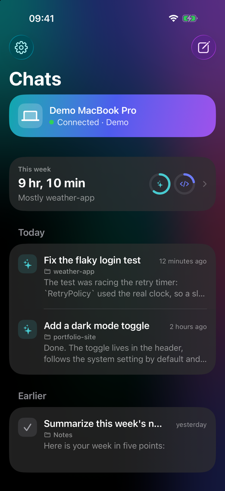
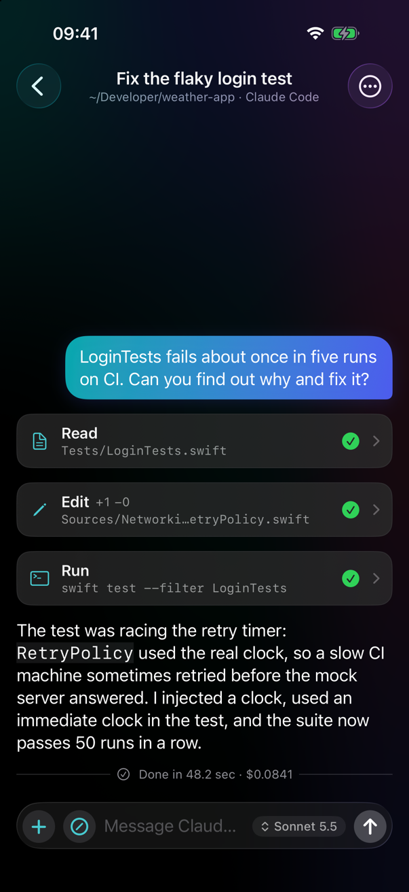

A fresh design
A brand-new look on iPhone, iPad and Mac. Tool calls, diffs and thinking open in sheets; what the agent is doing shows right inside the message field, with Stop where Send was.
1.1 is here New design, photos & videos, ten languages
Pilothouse runs Claude Code, Codex and Gemini on your Mac and puts them in your pocket: start sessions in any project folder, follow every response, tool call and diff live, and approve or deny every action.


Features
A small menu bar app on the Mac starts and supervises the official command-line tools, keeps the Mac awake and lets you pick any project folder. The iPhone and iPad app is where you follow and steer them.
A brand-new look on iPhone, iPad and Mac. Tool calls, diffs and thinking open in sheets; what the agent is doing shows right inside the message field, with Stop where Send was.
Attach photos from your library or the camera. Videos are sent as a few frames, so your agent can see what you mean.
Model names and effort levels come straight from Claude Code and Codex on your Mac — always the ones your CLI offers. Change them per chat.
Pilothouse checks GitHub once a day. Install and Relaunch verifies the checksum, Apple notarization and signature before replacing itself.
English, Türkçe, Deutsch, Español, Français, Italiano, Português, 日本語, 한국어 and 简体中文 — following your device.
At home Pilothouse talks to your Mac directly over Wi-Fi — nothing else to set up. Tailscale is optional, only for when you are away.
Pick the agent when you start a chat. Pilothouse only lists the CLIs installed on your Mac, and each session shows which agent it runs.
See the diff of an edit or the command to run, then Allow, Deny or always allow it for the session. Unanswered requests are denied after 10 minutes.
Responses, tool calls, diffs and terminal output as they happen. Reopen any chat from the last 30 days, offline too.
Claude can hand tasks to Codex or Gemini. Follow every sub-agent live in its own transcript and approve its actions.
Get a ping when a turn finishes or an approval is waiting, through ntfy or your own server. By default it only says “Task finished · folder name”.
The iPhone app includes a simulated Mac, so you can try everything before installing anything on your Mac — no account needed.
How it works
Download the notarized DMG, drag Pilothouse to Applications and open it. A helm icon appears in the menu bar; if Claude Code is missing or not signed in, it shows what to do.
Install Pilothouse on your iPhone or iPad through TestFlight (see below). No Mac yet? Try the Demo inside the app.
Click the helm icon, choose Pair iPhone or iPad… and scan the code with the phone. Allow Local Network when iOS asks. Both screens show the same verification code — done.
Download
macOS 15 Sequoia or later · Apple silicon or Intel
Or with Homebrew:
brew tap ardasnturk/pilothouse https://github.com/ardasnturk/pilot-house
brew install --cask pilothouseNeeds at least one of the official CLIs, installed and signed in with your own account: Claude Code, Codex, Gemini CLI.
iOS / iPadOS 18 or later · via TestFlight
Scan with your iPhone camera, or open the link on the device:
Open in TestFlightTestFlight is Apple's free app for beta apps; if it is not installed yet, the link takes you to it first.
Security & privacy
Pilothouse never talks to Anthropic or any other AI provider and never touches your credentials: your own CLI does all the AI work, signed in with your own account. There is no server, no account and no telemetry.
The QR code holds the Mac's public key and a one-time token, valid for 5 minutes. Only the holder of the matching private key can complete the handshake.
Noise_IK_25519_ChaChaPoly_SHA256: mutual authentication with pinned X25519 keys, fresh session keys, ChaCha20-Poly1305, replays rejected.
The phone can only browse and start sessions inside your home folder; paths are normalised and symlinks resolved before the check.
The CLI's own permission system stays in charge. Pilothouse forwards its prompts through a localhost-only endpoint protected by a per-session token.
Pilothouse never reads, stores or transmits your Claude login. An optional API key is kept in the Keychain.
Session logs on the Mac (mode 0600, deleted after 30 days), a cache on the phone, keys in the Keychain. Notifications are off unless you turn them on and choose the ntfy server.
FAQ
Check that Pilothouse is running on the Mac (helm icon in the menu bar), that both devices are on the same Wi-Fi — guest networks often keep devices apart — and that Local Network is on for Pilothouse in iOS Settings → Privacy & Security.
It needs whatever your CLI needs — for Claude Code, a Claude account with Claude Code access or an Anthropic API key. Pilothouse itself is free.
Only the way it already does with your CLI: it talks to its provider as usual. Pilothouse adds an encrypted link to your phone and nothing else.
It must run your own CLI with your shell environment and work in any of your folders, which the App Store sandbox does not allow. It is signed with Developer ID and notarized by Apple.
The iPhone app is distributed through a public TestFlight link instead of the App Store. Scan the QR code, install TestFlight if iOS asks, then install Pilothouse.
Yes, with Tailscale, a free private network between your devices: install it on the Mac and the iPhone, then turn on “Use Tailscale when away” in Pilothouse's settings. At home the phone still connects over Wi-Fi first.
Nothing is lost. The agent keeps working on the Mac; when the phone reconnects it catches up from the session log. Permission requests wait for you (up to 10 minutes).
The Mac sends them — as native macOS notifications and, if you enable it, to an ntfy topic. Install the free ntfy app on the phone and subscribe by scanning the QR code in the Mac settings. Tapping a notification opens that session in Pilothouse.
Quit Pilothouse and delete it (or brew uninstall --zap --cask pilothouse). Remove ~/Library/Application Support/Pilothouse and the “Pilothouse identity key” items in Keychain Access for a clean slate.